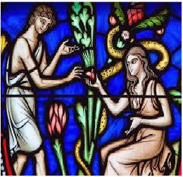

Exactly why were Adam and Eve expelled from the Garden of Eden? It’s probably not why you think. The evidence strongly suggests that this story was intended as a myth: a man named Man, a woman named Woman, and a talking snake. (All citations are from the King James Version):

Genesis 2:15 And the LORD God took the man, and put him into the garden of Eden to dress it and to keep it. 16 And the LORD God commanded the man, saying, Of every tree of the garden thou mayest freely eat: 17 But of the tree of the knowledge of good and evil, thou shalt not eat of it: for in the day that thou eatest thereof thou shalt surely die. …3:1 Now the serpent was more subtil than any beast of the field which the LORD God had made. And he said unto the woman, Yea, hath God said, Ye shall not eat of every tree of the garden? 2 And the woman said unto the serpent, We may eat of the fruit of the trees of the garden:
3 But of the fruit of the tree which is in the midst of the garden, God hath said, Ye shall not eat of it, neither shall ye touch it, lest ye die. 4 And the serpent said unto the woman, Ye shall not surely die: 5 For God doth know that in the day ye eat thereof, then your eyes shall be opened, and ye shall be as gods, knowing good and evil. 6 And when the woman saw that the tree was good for food, and that it was pleasant to the eyes, and a tree to be desired to make one wise, she took of the fruit thereof, and did eat, and gave also unto her husband with her; and he did eat. 7 And the eyes of them both were opened, and they knew that they were naked; and they sewed fig leaves together, and made themselves aprons. 8 And they heard the voice of the LORD God walking in the garden in the cool of the day: and Adam and his wife hid themselves from the presence of the LORD God amongst the trees of the garden. 9 And the LORD God called unto Adam, and said unto him, Where art thou? 10 And he said, I heard thy voice in the garden, and I was afraid, because I was naked; and I hid myself. 11 And he said, Who told thee that thou wast naked?
Hast thou eaten of the tree, whereof I commanded thee that thou shouldest not eat? 12 And the man said, The woman whom thou gavest to be with me, she gave me of the tree, and I did eat. 13 And the LORD God said unto the woman, What is this that thou hast done? And the woman said, The serpent beguiled me, and I did eat. … 22 And the LORD God said, Behold, the man is become as one of us, to know good and evil: and now, lest he put forth his hand, and take also of the tree of life, and eat, and live for ever: 23 Therefore the LORD God sent him forth from the garden of Eden, to till the ground from whence he was taken. 24 So he drove out the man; and he placed at the east of the garden of Eden Cherubims, and a flaming sword which turned every way, to keep the way of the tree of life.
So Adam and Eve didn’t die the day they ate the fruit, as God had said they would; they could have lived forever, had they eaten the fruit of the Tree of Life; and after they had become as gods God banished them from Eden to prevent their immortality. Not the Sunday school version.
~~~~~~~